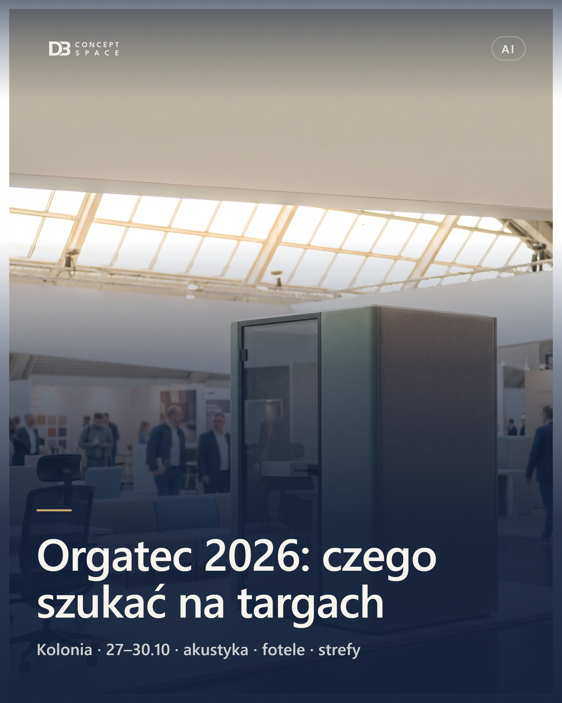
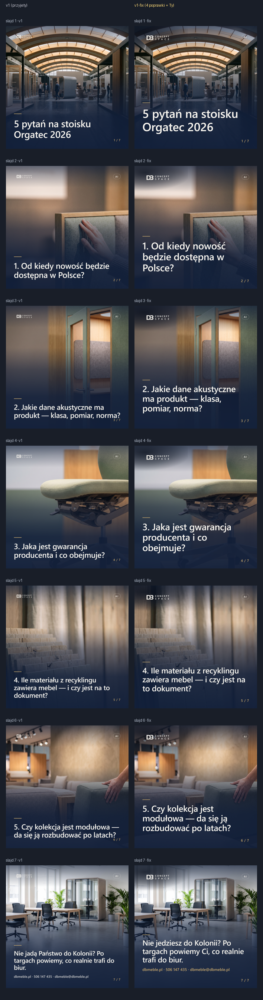

POWRÓT do v1 (przyjęta wersja z 19.10) · bazowe grafiki: sceny AI (Nano Banana Pro / Gemini), znacznik „AI” · tekst nakładki renderowany kodem. Zdjęcia, układ, tło, kolory v1 = BEZ ZMIAN. v2/v3 odrzucone.
Naniesione TYLKO 4 poprawki + forma Ty: (1) numer strony w osobnej strefie — nie nachodzi na tekst (sl.3, sl.6); (2) tekst główny większy (czytelny na telefonie); (3) kontakt na sl.7; (4) logo DB większe (czytelne na miniaturze w feedzie); (5) forma „Ty” (sl.7, było „Państwo”). FB/IG v1 bez zmian (brak „Państwo”).
NIEPUBLIKOWANE. Nic nie poszło do Meta ani LinkedIn.

